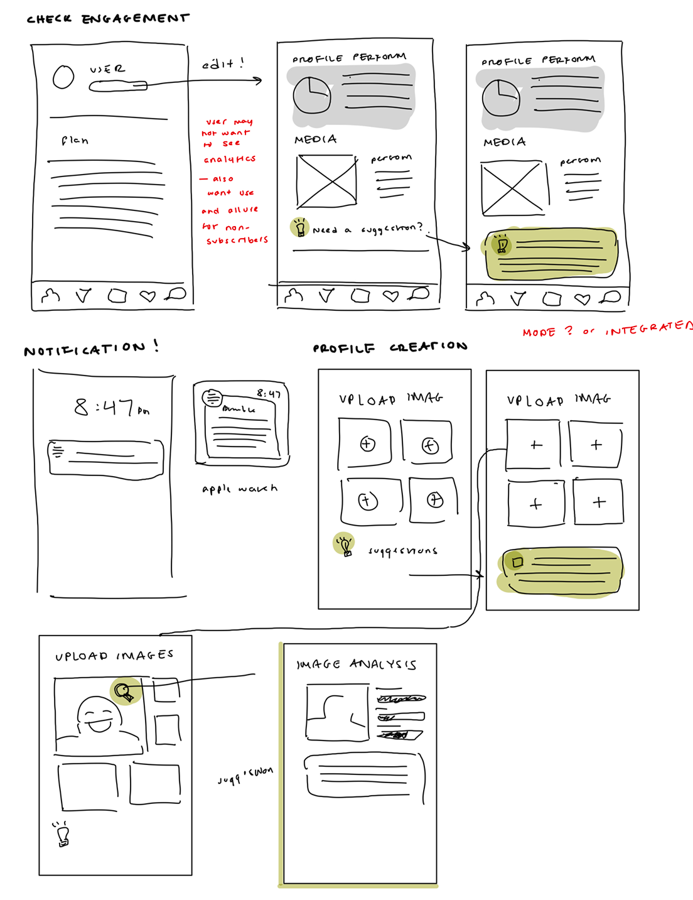
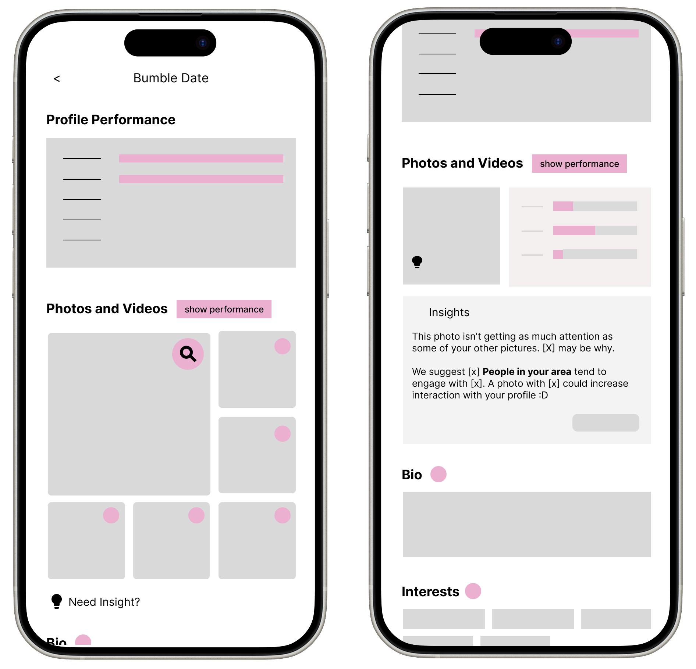
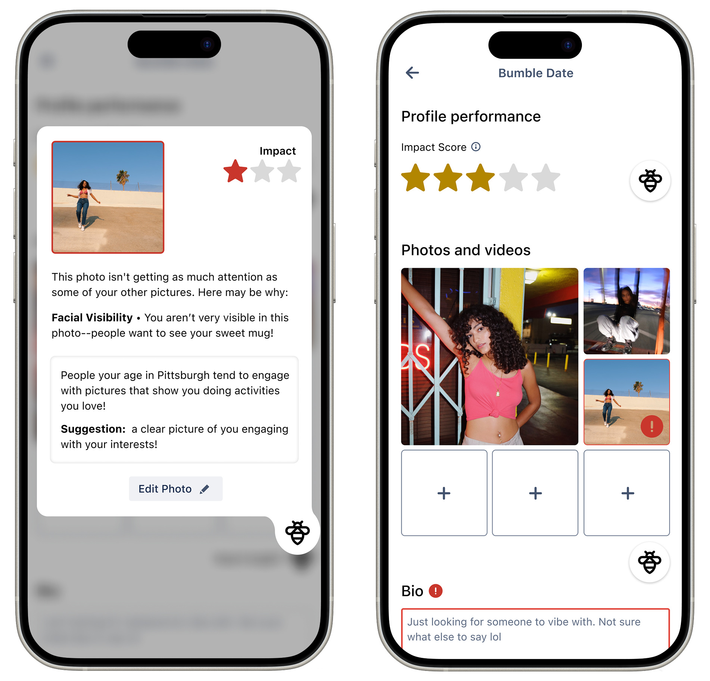

Bumble's Smart Profile Assistant
Role
Experience + Interaction Designer
Prototyping
User Research + Testing
Concept Development
Timeline
4 weeks
The Bumble Smart Profile Assistant helps users improve their profiles by analyzing interactions such as right and left swipes and dwell time on images and other profile elements. It also tracks location-based trends to provide personalized recommendations. By balancing data-driven insights with user individuality, it offers actionable guidance to help users make their profiles more engaging while preserving their individuality. Prototypes were created using Figma and the Atlassian Design System.
Challenges
Create a cross-platform digital service for Bumble, taking into consideration a design brief, functional spec, and data analytics.
Approach
Design Brief + Spec
The project began by examining the design brief and analytics to better understand the underlying goals and challenges. It heavily focused on encouraging users to allow access to precise-location services
Problem Reframing
Initially, I questioned the necessity of location services as a primary tool for increasing subscribers and gaining user insight, believing more privacy-respectful solutions were possible. Research, including user polls, revealed that location services primarily benefit Bumble rather than users, and many users are uncomfortable with them.
Qualitative Research
To enhance the depth of my research, I explored platforms like Reddit, which allowed me to gather valuable anecdotal insights. I observed that users regularly seek opinions on their profiles from both in-person and digital communities. This behavior underscores the importance of providing guidance based on feedback, emphasizing the need for features that facilitate user validation and support.
Concept Development
Profile Assistant: The assistant was designed to provide clear value to users by offering personalized feedback and suggestions, addressing the same needs that ultimately create value for Bumble.
Wireframes: First Iteration
To develop the Smart Profile Assistant, I began with low-fidelity wireframes that aligned closely with Bumble’s existing profile editing screens. The goal was to integrate the assistant seamlessly without disrupting the familiar user experience. The initial wireframe emphasizes assistant suggestions, making them visible and data-forward.
Wireframes: Second Iteration
Critical Decision: Lowering the assistant down a layer in the hierarchy.
Rationale: Initially, the assistant was highly visible, but early feedback indicated that users preferred control over how they engaged with suggestions. By making the assistant an optional feature rather than front-loading it or making it highly visible, users can engage with it on their own terms. This approach respects users' familiarity with the existing system and avoids overwhelming them with new functionality. The assistant is designed to be non-intrusive, quietly accessible, and supportive, offering smart suggestions when called upon, ensuring it enhances the user experience without disrupting or dictating it.
Initial Prototype
Early prototypes emphasized data transparency, but user testing revealed challenges in interpreting the insights. Some users found the data overwhelming or struggled to act on the information provided.
Key Testing Insights:
- Users appreciated the descriptive feedback and the bee assistant's personality.
- The raw data was difficult to interpret.
- Users preferred suggestions framed in a conversational, supportive way.
How This Informed Design Changes:
- Shifted from displaying direct engagement metrics to warm, qualitative feedback.
- Reduced the visibility of numbers and statistics in favor of contextualized, easy-to-understand suggestions.
- Maintained a balance between personalized insights and user autonomy.
Finalizing Prototype
Critical Decision: Warm, Qualitative Feedback and Reduced Quantitative Feedback
Rationale: Users saw their profiles as personal extensions of themselves, and a friendly, human (bee)-like assistant created a more welcoming experience. Testing confirmed that users felt more comfortable with abstracted, qualitative suggestions rather than data-heavy feedback. This shift reinforced trust and made the assistant feel more like a helpful guide rather than a judgmental evaluator.
Key Takeaways
Importance of User Testing
The moments when I gained the most valuable insights were during conversations with test users and through surveys. These interactions were essential in clarifying the direction of my project. However, I recognize that I could have bettered my process by conducting additional tests on my prototypes and diversifying the range of participants I engaged with. This project would have benefitted a lot from a broader approach.
Balancing Familiarity & Innovation
While I am naturally drawn to unconventional design approaches, this project reinforced the importance of leveraging established conventions for clarity and usability. Moving forward, I aim to find the right balance between creative exploration and intuitive, user-friendly experiences.